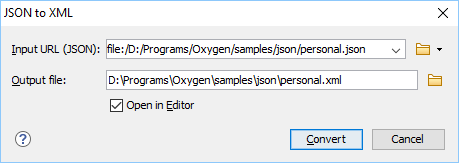

JSON to XML Converter
Online JSON to XML Converter
Attention:
For a simple ONLINE tool for converting a single JSON file to XML, or vice versa, go to: https://www.oxygenxml.com/xml_json_converter.html.
Converting JSON to XML in Oxygen
Oxygen XML Editor includes a useful and simple tool for converting JSON files to XML. The JSON to XML action for invoking the tool can be found in the menu.
To convert a JSON document to XML, follow these steps:
-
Select the JSON to XML action from the menu.
The JSON to XML dialog box is displayed:
Figure 1. JSON to XML Dialog Box  - Choose or enter the Input URL of the JSON document.
- Choose the path of the Output file that will contain the resulting XML document.
- Select the Open in Editor option to open the resulting XML document in the main editing pane.
- Click the Convert button.
Result: The original JSON document is now converted to an XML document.
Conversion Details
-
If the JSON document has more than one property on the first level, the converted XML document will have an additional root element called
<JSON>.For example, the following JSON document:{ "personnel": { "person": [ {"name": "Boss"}, {"name": "Worker"} ] }, "id":"personnel-id" }it is converted to:<?xml version="1.0" encoding="UTF-8"?> <JSON> <personnel> <person> <name>Boss</name> </person> <person> <name>Worker</name> </person> </personnel> <id>personnel-id</id> </JSON> -
If the JSON document is an array, the converted XML document will have a root element called
<array>and for each item within the array, another<array>is created.[ {"name": "Boss"}, {"name": "Worker"} ]it is converted to:<?xml version="1.0" encoding="UTF-8"?> <array> <array> <name>Boss</name> </array> <array> <name>Worker</name> </array> </array> -
If the name of a JSON property contains characters that are not valid in XML element names (for example, $), then the invalid characters will be escaped as its hexadecimal equivalent in the converted XML.
{"$id": "personnel-id"}is converted to:<_X24_id>personnel-id</_X24_id>